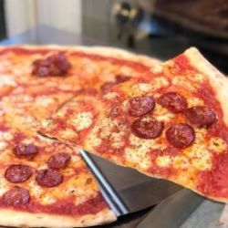
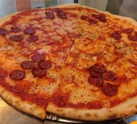
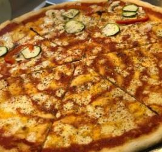

- Grainger Market in Alley Nr 4, entrance from Nelson Street
- 123 456 7890
- Mon-Sat 9:30am-4:30pm
Welcome To
Pizza Slice Newcastle
Welcome! We are passionate about delivering hot, delicious, and freshly made pizzas right to your doorstep.
Our pizzas are crafted with love and the finest ingredients, providing an irresistible blend of flavors in every bite.
We believe in not just serving food, but serving happiness through our pizzas, making every dining experience a memorable one. Join us on this delightful journey and taste the best pizza in town!



Chef Recommends
The chef's personal recommendations
I love Neapolitan pizza because it is the essence of pizza. It is not overloaded with toppings or sauces, but it is balanced and harmonious. It is made with simple and fresh ingredients that showcase the quality and the flavor of each component. It is cooked at very high temperatures for a short time, resulting in a thin and crispy crust with a soft and moist center. It is a pizza that has a history and a tradition, that respects the art and the craft of pizza making. It is a pizza that makes me happy and satisfied every time I eat it. It is a pizza that I am proud to make and to share with others.
I love Roman-style pizza because it is the perfect pizza for any occasion. It is made with a thick and airy dough that is crispy on the outside and fluffy on the inside. It is topped with a variety of ingredients, from classic cheese and tomato to gourmet combinations of meats, cheeses, and vegetables. It is cut into rectangular slices that are easy to eat and share. It is a pizza that is versatile and satisfying, that can be enjoyed as a snack, a meal, or a treat. It is a pizza that reflects the culture and the diversity of Rome, the eternal city. It is a pizza that I am passionate about and that I love to make and to eat.
There is no better way than to start your day with your favourite LARGE pizza slice!
This pizza store has friendly staff, clean place, and delicious pizza. I loved their pepperoni pizza with extra cheese. They also gave me free garlic bread and salad. The food was fresh, tasty, and affordable. I highly recommend this pizza store to pizza lovers.
Jane Doe - Newcastle

I had a wonderful time at this pizza store. The service was fast and courteous, the atmosphere was warm and inviting, and the pizza was amazing. I tried their chicken and mushroom pizza with extra sauce and it was moist and flavorful. They also served me a complimentary drink and dessert. The pizza was huge and the price was fair. I will definitely come back to this pizza store and bring my friends and family.
John Doe - Newcastle

This pizza store is the best place to go for pizza lovers. The service was excellent and the place was spotless. The pizza was mouthwatering and fresh. I had their veggie pizza with extra olives and it was loaded with toppings. They also offered me a free soup and cookie. The pizza was big and the price was low. I can't wait to visit this pizza store again and try their other pizzas.
John Doe - Newcastle
Address
Grainger Market in Alley Nr 4, entrance from Nelson Street
Phone
0708 (999) 123-4567, (999) 806-01 04
Email : info@pizza